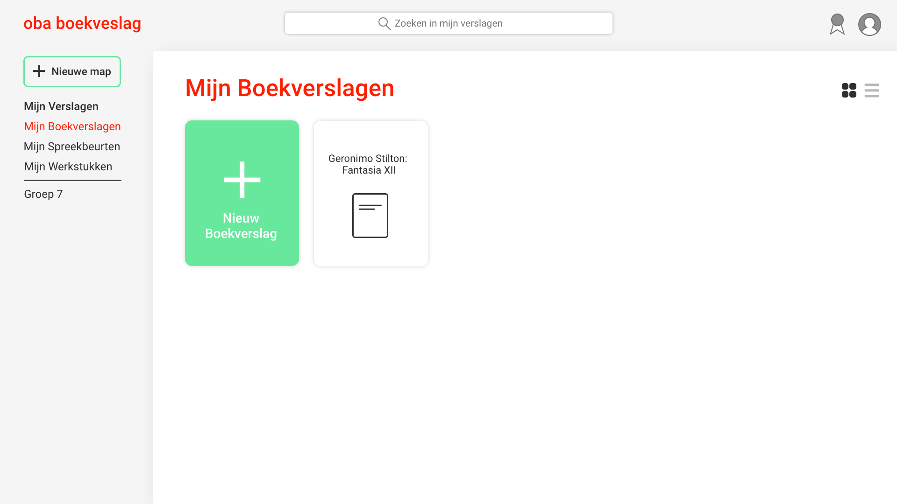
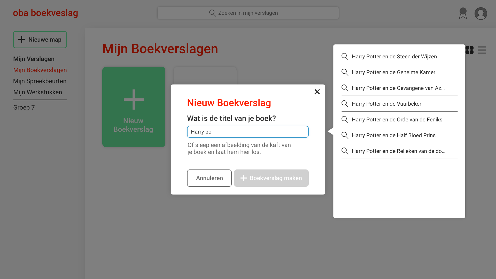
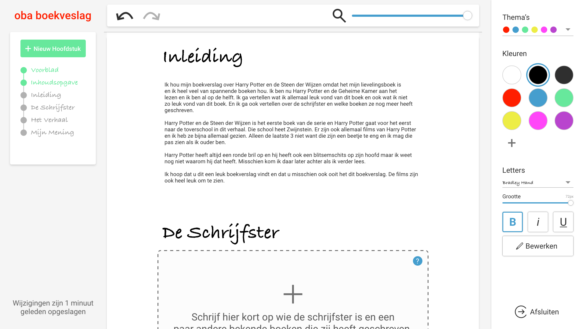
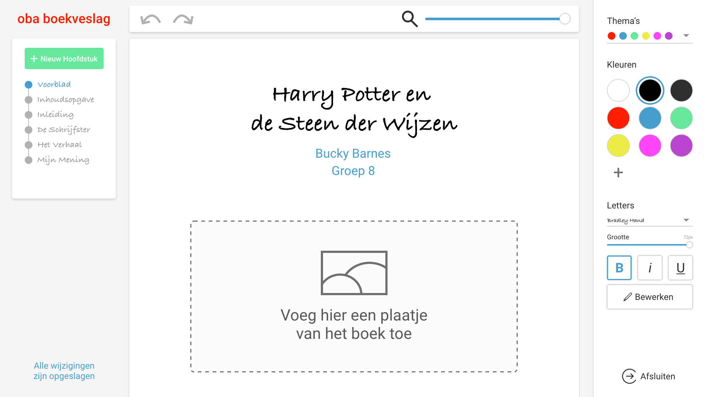
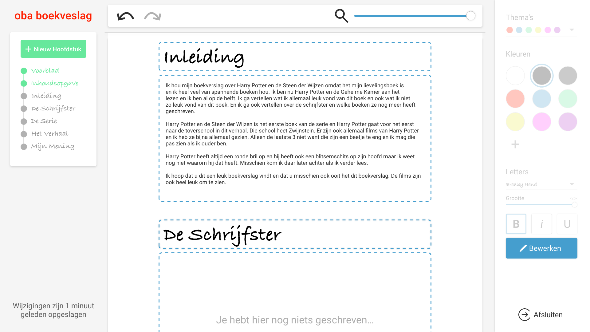

OBA Boekverslag
Voor Project Interaction heb ik voor de OBA een kindvriendelijke text editor gemaakt die kinderen helpen een boekverslag te schrijven. OBA Boekverslag volgt een boekverslag template zodat het kind wordt begeleid tijdens het maken van zijn of haar boekverslag. Tot slot beschikt OBA Boekverslag alleen over de noodzakelijke functies zoals de tekst grootte en kleur wijzigen, zodat het kind niet overspoeld wordt door de applicatie zelf.
CMD Methods Redesign





Design Rationale & Product Biografie
Zie hier de OBA Boekverslag Design Rationale.
Zie hier de OBA Boekverslag Product Biografie.